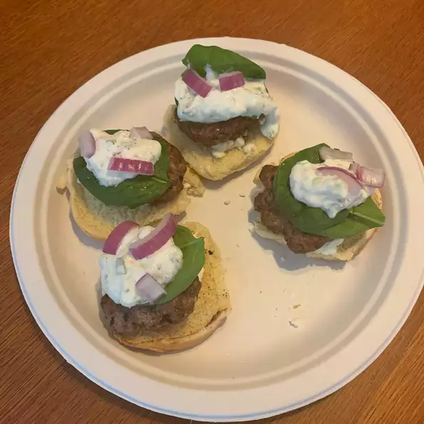

Lamb Sliders

Ingredients
- 1 tablespoon minced garlic
- 1/4 teaspoon ground cumin
- 1/4 teaspoon ground coriander
- 1/4 teaspoon ground allspice
- 1/4 teaspoon salt, or to taste
- 1/4 teaspoon ground black pepper, or to taste
- 1 pound ground lamb
- 8 small slider-size rolls, split
- 1 cup baby spinach
- 1/2 cup tzatziki sauce
- 1/4 cup sliced red onion
- 1/4 cup crumbled feta cheese
Directions
- Preheat an outdoor grill for medium-high heat and lightly oil the grate.
- Mix garlic, cumin, coriander, allspice, salt, and pepper together in a bowl; add lamb and mix well. Form
mixture into 2-ounce patties.
- Grill patties on the preheated grill until cooked through, 2 to 3 minutes per side. An instant-read
thermometer inserted into the center should read at least 160 degrees F (70 degrees C). Place rolls on the
grill and heat until toasted, 1 to 2 minutes.
- Layer spinach, tzatziki sauce, lamb patty, red onion, and feta cheese in each roll, creating a slider.